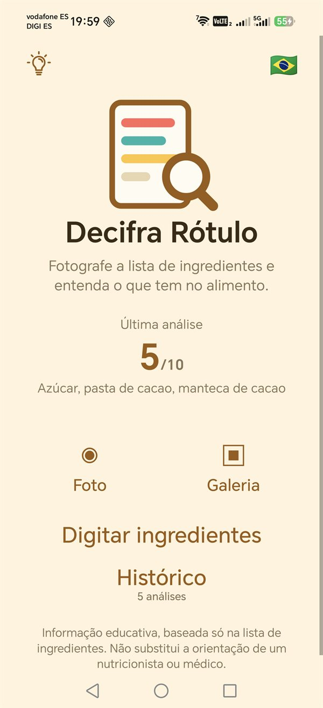
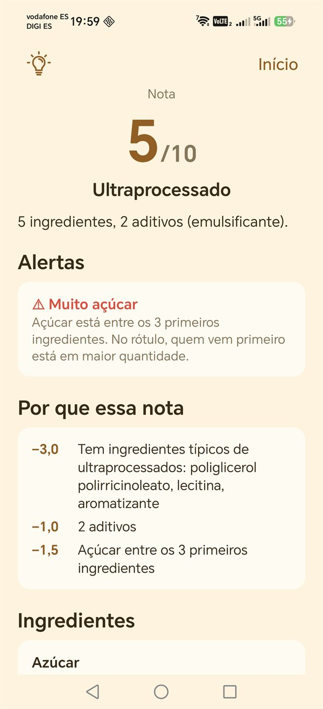
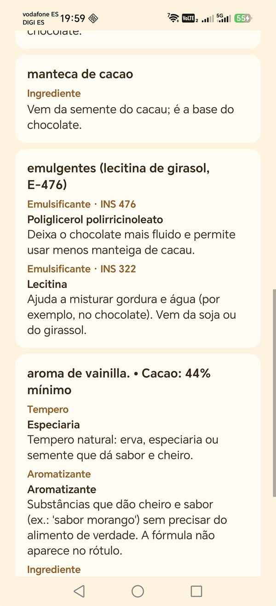
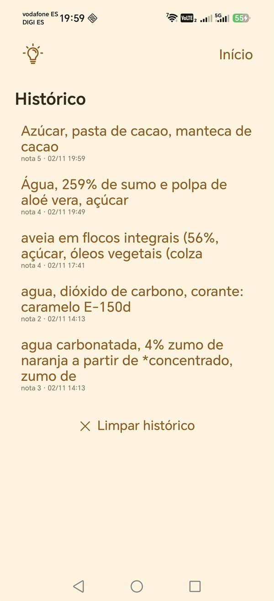

Decifra Rótulo
Fotografe a lista de ingredientes e entenda cada aditivo, com alertas e nota de 0 a 10.
▶ Google PlayEm breveApp para Android · compra única, sem assinatura e sem anúncios
Você vira o pacote, lê emulsificante INS 322
, aromatizante
, xarope de glicose
e fica na mesma? O Decifra Rótulo traduz a lista de ingredientes para português simples.
Como funciona
- 1Tire uma foto da lista de ingredientes, escolha uma imagem da galeria ou digite o texto.
- 2Confira o texto lido e corrija o que precisar.
- 3Veja cada ingrediente explicado: o que é, para que serve e se merece atenção.
Veja o app

Início 
Nota e alertas 
Ingredientes explicados 
Histórico
O que você recebe
Cada ingrediente explicado
Corantes, conservantes, espessantes, adoçantes, realçadores de sabor e muito mais, com os códigos INS e E.
Alertas de alérgenos
Glúten, leite, ovo, soja, amendoim, castanhas, peixe, crustáceos e os demais 14 alérgenos da lista europeia, além de lactose e látex.
Nota de 0 a 10
Com o motivo de cada ponto descontado, e se o produto é ultraprocessado. Avisa quando há açúcar ou sal entre os primeiros ingredientes, vários tipos de açúcar ou gordura trans.
Histórico
As últimas 30 análises ficam guardadas só no seu celular, e você apaga quando quiser.
Feito para a sua privacidade
- Funciona 100% offline: o app nem tem permissão de internet.
- Sem anúncios, sem conta, sem cadastro, sem assinatura. Você paga uma vez e pronto.
- Nenhum dado é coletado. A foto e o histórico ficam no seu aparelho.
- Achou um ingrediente que o app não conhece? Toque em “Avisar o desenvolvedor” e mande pelo seu próprio e-mail, só se quiser.
Idiomas
- Lê rótulos escritos em português (Brasil e Portugal), espanhol e inglês (do Reino Unido e dos Estados Unidos).
- Interface em português, espanhol e inglês.
O dicionário tem mais de 280 ingredientes e aditivos e mais de 3500 nomes e variações, e cresce a cada versão.